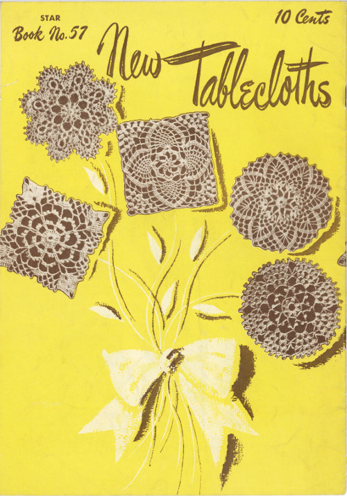
10 Cents
STAR
Book No. 57
Copyright 1948, American Thread Co.
Printed in U.S.A.
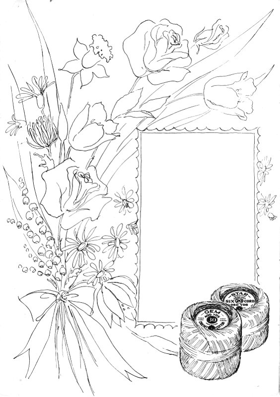
Flowers are everybody’s favorite—and these flower-inspired crochet tablecloths are sure to be favorites with you. To make the most of your precious china and silver—to add to the charm of your home, crochet a lovely flower cloth which you and your daughter will use proudly for years. To insure the enduring beauty of your tablecloth make it with STAR Brand Crochet Cotton.
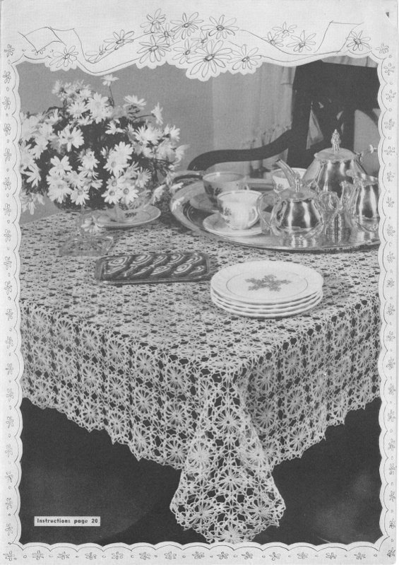
Instructions page 20
Materials Required—
AMERICAN THREAD COMPANY
“STAR” MERCERIZED CROCHET COTTON,
ARTICLE 20, SIZE 20
Each motif measures about 4¼ inches. 221 motifs 13x17 are required for cloth measuring about 55x72 inches without edge.
MOTIF—Ch 8, join to form a ring, ch 1 and work 16 s c in ring, join in 1st s c.
2nd Row—Ch 7, sl st in 5th st from hook for picot, ch 2, skip 1 s c, s c in next s c, repeat from beginning all around.
3rd Row—Sl st to center of picot, * ch 8, s c in next picot, repeat from * 6 times, ch 4, d c in 1st picot (this brings thread in position for next row).
4th Row—Ch 4, 4 d c over same loop, work 4 d c, ch 1, 4 d c over each remaining loop working 3 d c over remainder of 1st loop, join in 3rd st of ch.
5th Row—Sl st in next st of ch, * ch 7, 7 tr c with ch 1 between each tr c in next ch 1 loop, ch 7, s c in next ch 1 loop, repeat from * 3 times.
6th Row—Sl st to center of loop, s c over same loop, ** ch 5, s c in next ch 1 loop, * ch 3, s c in next ch 1 loop, repeat from * 4 times, ch 5, s c in next loop, ch 6, s c in next loop, repeat from ** twice, ch 5, s c in next ch 1 loop, * ch 3, s c in next ch 1 loop, repeat from * 4 times, ch 5, s c in next loop, ch 2, d c in 1st s c.
7th Row—Ch 3, 2 d c over same loop, ** ch 3, s c in next loop, ch 5, s c in next loop. * ch 3, s c in next loop, repeat from * 3 times, ch 5, s c in next loop, ch 3, 3 d c in next loop, repeat from ** twice, ch 3, s c in next loop, ch 5, s c in next loop, * ch 3, s c in next loop, repeat from * 3 times, ch 5, s c in next loop, ch 3, join in 3rd st of ch.
8th Row—Ch 1, 2 tr c in same space, ** ch 7, skip 1 d c 3 tr c in next d c, ch 3, skip next 3 ch loop, s c in next 5 ch loop, ch 5, s c in next loop, * ch 3, s c in next loop, repeat from * twice, ch 5, s c in next loop, ch 3, 3 tr c in next d c, repeat from ** twice, ch 7, skip 1 d c, 3 tr c in next d c, ch 3, skip next 3 ch loop, s c in next 5 ch loop, ch 5, s c in next loop, * ch 3, s c in next loop, repeat from * twice, ch 5, s c in next loop, ch 3, join in 4th st of ch.
9th Row—Ch 4, 1 tr c in each of the next 2 tr c, ** ch 7, s c in next loop, ch 7, 1 tr c in each of the next 3 tr c, ch 3, skip next 3 ch loop, s c in next 5 ch loop, ch 5, s c in next loop, * ch 3, s c in next loop, repeat from * once, ch 5, s c in next loop, ch 3, 1 tr c in each of the next 3 tr c, repeat from ** twice, ch 7, s c in next loop, ch 7, 1 tr c in each of the next 3 tr c, ch 3, skip next 3 ch loop, s c in next 5 ch loop, ch 5, s c in next loop, * ch 3, s c in next loop, repeat from * once, ch 5, s c in next loop, ch 3, join in 4th st of ch.
10th Row—Ch 4, 1 tr c in each of the next 2 tr c, * ch 9, s c in next loop, ch 9, s c in next loop, ch 9, 1 tr c in each of the next 3 tr c, ch 3, skip next 3 ch loop, s c in next 5 ch loop, ch 5, s c in next loop, ch 3, s c in next loop, ch 5, s c in next loop, ch 3, 1 tr c in each of the next 3 tr c, repeat from * twice, ch 9, s c in next loop, ch 9, s c in next loop, ch 9, 1 tr c in each of the next 3 tr c, ch 3, skip next 3 ch loop, s c in next 5 ch loop, ch 5, s c in next loop, ch 3, s c in next loop, ch 5, s c in next loop, ch 3, join in 4th st of ch.
11th Row—Ch 4, 1 tr c in each of the next 2 tr c, ** ch 9, s c in next loop, ch 5, work 4 cluster sts with ch 5 between each cluster st in next loop (cluster st: * thread over twice, insert in loop, pull through and work off 2 loops twice, repeat from * twice, thread over and work off all loops at one time), ch 5, s c in next loop, ch 9, 1 tr c in each of the next 3 tr c, ch 3, skip next 3 ch loop, s c in next 5 ch loop, * ch 5, s c in next loop, repeat from * once, ch 3, 1 tr c in each of the next 3 tr c, repeat from ** twice, ch 9, s c in next loop, ch 5, work 4 cluster sts with ch 5 between each cluster st in next loop, ch 5, s c in next loop, ch 9, 1 tr c in each of the next 3 tr c, ch 3, skip next 3 ch loop, s c in next 5 ch loop, * ch 5, s c in next loop, repeat from * once, ch 3, join in 4th st of ch.
12th Row—Ch 4, 1 tr c in each of the next 2 tr c, ** ch 9, s c in next loop, * ch 5, cluster st in next loop, repeat from * 4 times, ch 5, s c in next loop, ch 9, 1 tr c in each of the next 3 tr c, ch 3, skip next 3 ch loop, 1 s c in each of the next 2 loops, ch 3, 1 tr c in each of the next 3 tr c, repeat from ** twice, ch 9, s c in next loop, * ch 5, cluster st in next loop, repeat from * 4 times, ch 5, s c in next loop, ch 9, 1 tr c in each of the next 3 tr c, ch 3, skip next 3 ch loop, 1 s c in each of the next 2 loops, ch 3, join in 4th st of ch.
13th Row—Sl st across each tr c and to center st of next loop, s c over same loop. * ch 5, cluster st in next loop, repeat from * twice, ch 5, cluster st in next cluster st, ch 11, cluster st in same space, ch 5, cluster st in next loop, repeat from * twice, ch 5, s c in next loop, ch 9, * thread over twice, insert in next tr c and work off 2 loops twice. repeat from * 5 times, thread over and work off all loops at one time, ch 9, s c in next loop, continue all around in same manner ending row with ch 9, sl st in 1st s c, break thread.
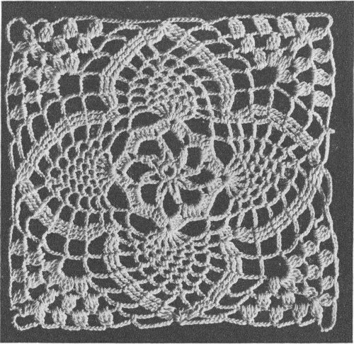
Continuation from page 20
Work a 2nd motif in same manner joining to 1st motif in last row as follows: sl st to center of 1st loop, s c in same loop, * ch 5, cluster st in next loop, repeat from * twice, ch 5, cluster st in next cluster st, ch 6, sl st in corresponding loop of 1st motif, ch 6, cluster st in same cluster st of 2nd motif, * ch 3, sl st in corresponding loop of 1st motif, ch 3, cluster st in next loop of 2nd motif, repeat from * twice, ch 3, sl st in corresponding loop of 1st motif, ch 3, s c in next loop of 2nd motif, ch 5, sl st in corresponding loop of 1st motif, ch 5, * thread over twice, insert in next tr c of 2nd motif, pull through and work off 2 loops twice, repeat from * 5 times, thread over and work off all loops at one time, ch 5, sl st in corresponding loop of 1st motif, ch 5, s c in next loop of 2nd motif, * ch 3, sl st in corresponding loop of 1st motif, ch 3, cluster st in next loop of 2nd motif, repeat from * twice, ch 3, sl st in corresponding loop of 1st motif, ch 3, cluster st in next cluster st of 2nd motif, ch 6, sl st in corresponding loop of 1st motif, ch 6, cluster st in same cluster st of 2nd motif and complete motif same as 1st motif.
Join 3rd motif to 2nd motif and 4th motif to 3rd and 1st motifs in same manner.
EDGE: Attach thread at joining at right hand side before corner, ch 4, cluster st in same space, ch 4, sl st in top of cluster st for picot, ch 5, s c in next loop, ch 4, sl st in top of s c for picot, * ch 5, cluster st in next loop, ch 4, sl st in top of cluster st for picot, ch 5, s c in next loop, ch 4, sl st in top of s c for picot, repeat from * once, ch 5, cluster st in next loop, picot, ch 5, s c in top of tr c group, ch 4, sl st in top of s c for picot, * ch 5, cluster st in next loop, picot, ch 5, s c in next loop, picot, repeat from * twice, ch 5, cluster st in same space, picot, ch 6, sl st in 4th st from hook for picot, ch 2, cluster st in same space, picot, ch 5, s c in same space, picot, (corner) * ch 5, cluster st in next loop, picot, ch 5, s c in next loop, picot, repeat from * once, ch 5, cluster st in next loop, picot, ch 5, s c in top of tr c group, picot, * ch 5, cluster st in next loop, picot, ch 5, s c in next loop, picot, repeat from * twice, ** ch 5, cluster st in joining, picot, * ch 5, s c in next loop, picot, ch 5, cluster st in next loop, picot, repeat from * twice, ch 5, s c in top of tr c group, picot, * ch 5, cluster st in next loop, picot, ch 5, s c in next loop, picot, repeat from * twice, repeat from ** all around working all corner motifs same as 1st corner motif.
If napkins are desired, cut linen the required size. Roll a narrow hem and work a row of s c over hem. Finish with edge same as on cloth.
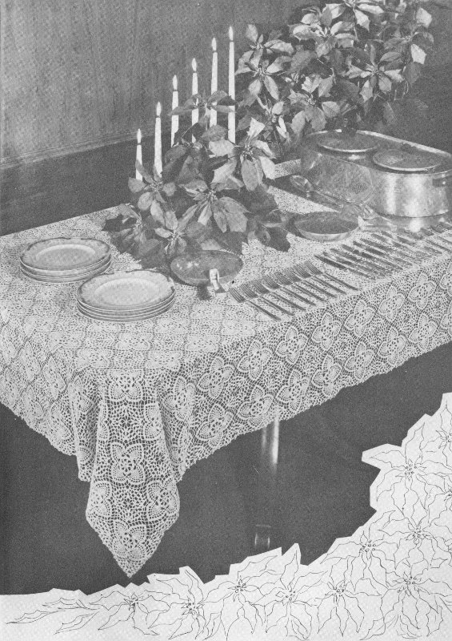
Materials Required—
AMERICAN THREAD COMPANY
“STAR” MERCERIZED CROCHET COTTON.
ARTICLE 20. SIZE 30
Each motif measures about 3 inches. 567 motifs 21×27 are required for cloth measuring about 63×81 inches without edge.
MOTIF—Ch 8, join to form a ring, ch 4 and work 23 tr c into ring, join in 4th st of ch.
2nd Row—Ch 3, d c in same space, * ch 6, sl st in 5th st from hook for picot, ch 6, sl st in 5th st from hook for picot, ch 1, skip 2 tr c, 2 d c in next tr c, repeat from * 6 times, * ch 6, sl st in 5th st from hook for picot, repeat from *, ch 1, join in 3rd st of ch.
3rd Row—Ch 4, tr c in d c, * ch 6, sl st in 5th st from hook for picot, repeat from * 3 times, ch 1, 1 tr c in each of the next 2 d c, repeat from 1st * all around in same manner, join in 4th st of ch.
4th Row—Ch 10, * tr c in center of 4 picot loop, ch 6, tr c between next 2 tr c, ch 6, tr c in same space, ch 6, tr c in center of next 4 picot loop, ch 6, tr c between next 2 tr c, ch 6, repeat from * twice, tr c in center of next 4 picot loop, ch 6, tr c between next 2 tr c, ch 6, tr c in same space, ch 6, tr c in center of next 4 picot loop, ch 6, join in 4th st of ch.
5th Row—Ch 1, 6 s c over loop, ch 5, s c in next loop, ch 5, 3 d c in next loop, ch 3, 3 d c in same loop, * ch 5, s c in next loop, ch 5, 6 s c over each of the next 2 loops, ch 5, s c in next loop, ch 5, 3 d c in next loop, ch 3, 3 d c in same loop, repeat from * twice, ch 5, s c in next loop, ch 5, 6 s c over next loop, join in 1st s c.
6th Row—Ch 1, 1 s c in each of the next 4 s c, * ch 5, s c in next loop, repeat from * once, ** ch 5, 1 d c in each d c, 3 tr c in corner loop, ch 3, 3 tr c in same space, 1 d c in each d c, * ch 5, s c in next loop, repeat from *, ch 5, skip 2 s c, 1 s c in each of the next 8 s c, * ch 5, s c in next loop, repeat from * once, then repeat from ** all around in same manner ending row with skip 2 s c, 1 s c in each of the next 4 s c, join in 1st s c.
7th Row—Ch 1, 1 s c in each of the next 2 s c, * ch 5, s c in next loop, repeat from * twice, ** ch 5, 1 d c in each of the next 6 sts, 3 tr c in corner loop, ch 5, 3 tr c in same loop, 1 d c in each of the next 6 sts, * ch 5, s c in next loop, repeat from * twice, ch 5, skip 2 s c, 1 s c in each of the next 4 s c, * ch 5, s c in next loop, repeat from * twice, then repeat from ** all around in same manner, join in 1st s c, break thread.
Work a 2nd motif in same manner joining to 1st motif in last row as follows: ch 1, 1 s c in each of the next 2 s c, * ch 5, s c in next loop, repeat from * twice, ch 5, 1 d c in each of the next 6 sts, 3 tr c in corner loop, ch 2, sl st in corresponding loop of 1st motif, 3 tr c in same loop of 2nd motif, 1 d c in each of the next 6 sts, * ch 2, sl st in corresponding loop of 1st motif, ch 2, s c in next loop of 2nd motif, repeat from * twice, ch 2, sl st in corresponding loop of 1st motif, ch 2, skip 2 s c of 2nd motif, 1 s c in each of the next 4 s c, * ch 2, sl st in corresponding loop of 1st motif, ch 2, s c in next loop of 2nd motif, repeat from * twice, ch 2, sl st in corresponding loop of 1st motif, ch 2, 1 d c in each of the next 6 sts of 2nd motif, 3 tr c in corner loop, ch 2, sl st in corresponding loop of 1st motif, ch 2, 3 tr c in same loop of 2nd motif and complete motif same as 1st motif. join 3rd motif to 2nd motif and 4th motif to 1st and 3rd motifs in same manner.
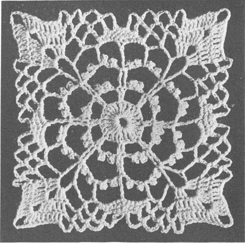
EDGE: With right side of work toward you and starting at corner motif, join thread in center of s c group to the right of corner, * ch 5, s c in next loop, repeat from * 3 times, ch 5, skip 4 d c, s c in next d c, ch 5, 3 tr c in corner loop, ch 5, 3 tr c in same loop, ** ch 5, skip 3 tr c and 1 d c, s c in next d c, * ch 5, s c in next loop, repeat from * 3 times, ch 5, s c in center of s c group, * ch 5, s c in next loop, repeat from * 3 times, ch 5, skip 4 d c, s c in next d c, * ch 5, s c in next loop, repeat from *, then repeat from ** all around working all corners in same manner, join.
2nd Row—Sl st to center of loop, ch 8, sl st in 5th st from hook for picot, d c in next loop, * ch 5, sl st in 5th st from hook for picot, d c in next loop, repeat from * twice, * ch 5, sl st in 5th st from hook for picot, ch 6, sl st in 5th st from hook for picot, d c in next loop, repeat from * once, ch 5, sl st in 5th st from hook for picot, ch 6, sl st in 5th st from hook for picot, repeat from * once, d c in same loop (corner), * ch 5, sl st in 5th st from hook for picot, ch 6, sl st in 5th st from hook for picot, d c in next loop, repeat from * once, ch 5, sl st in 5th st from hook for picot, d c in next loop, repeat from * 10 times, ch 5, sl st in 5th st from hook for picot, d c in same loop, ** ch 5, sl st in 5th st from hook for picot, d c in next loop, * ch 5, sl st in 5th st from hook for picot, d c in next loop, repeat from * 11 times, ch 5, sl st in 5th st from hook for picot, d c in same loop, repeat from ** all around working all corners same as 1st corner.
If napkins are desired, cut linen the size required. Turn under a small hem. Work a row of s c all around.
2nd Row—Ch 7, sl st in 5th st from hook for picot, ch 2, skip 3 s c, s c in next s c, repeat from beginning all around.
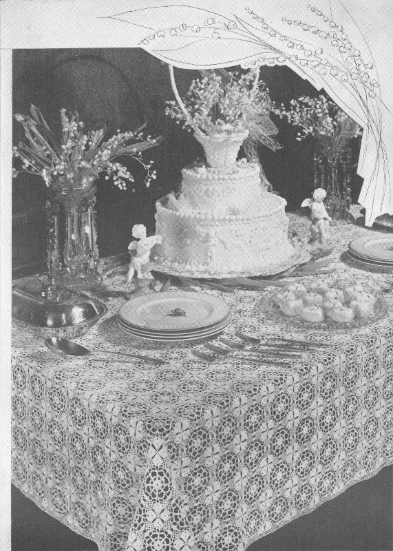
Materials Required—
AMERICAN THREAD COMPANY
“STAR” MERCERIZED CROCHET COTTON.
ARTICLE 20, SIZE 20
Each motif measures about 4½ inches. 192 Motifs 12x16 are required for cloth measuring about 56x74 inches with edge.
MOTIF—Ch 8, join to form a ring, ch 3 and work 23 d c into ring, join in 3rd st of ch.
2nd Row—Ch 12, sl st in 7th st from hook, ch 5, skip 2 d c, s c in next d c, repeat from beginning all around.
3rd Row—5 s c over next loop, sl st in next loop, ch 4, * thread over twice, insert in same loop, pull through and work off 2 loops twice, repeat from * once, thread over and work off all loops at one time, ** ch 5, * thread over twice, insert in same loop, pull through and work off 2 loops twice, repeat from * twice, thread over and work off all loops at one time, repeat from ** twice, ch 5, * thread over twice, insert in same loop, pull through and work off 2 loops twice, repeat from * once, thread over and work off all loops at one time, ch 4, sl st in same loop, 5 s c in next loop, repeat from beginning all around.
4th Row—Sl st across next 5 s c, then ch 4 and to the center of next loop, s c in same loop, * ch 6, s c in next loop, repeat from * twice, s c in next loop, repeat from 1st * all around, join in 1st s c.
5th Row—Sl st in each of the next 2 chs, 3 s c in same loop, * ch 6, 3 s c in next loop, repeat from * all around ending row with ch 3, d c in 1st s c (this brings thread in position for next row).
6th Row—Ch 4 (ch 4 at beginning of row counts as 1 tr c), 2 tr c in same space, * ch 5, 3 s c in next loop, repeat from * once, ch 5, then repeat from beginning all around, join in 4th st of ch.
7th Row—Ch 4, 2 tr c in same space, * ch 7, skip next tr c, 3 tr c in next tr c, ch 6, skip next loop, 5 s c in next loop, ch 6, 3 tr c in next tr c, repeat from * all around, ending row with ch 7, skip next tr c, 3 tr c in next tr c, ch 6, skip next loop, 5 s c in next loop, ch 6, join in 4th st of ch.
8th Row—Ch 4, 1 tr c in each of the next 2 tr c, * ch 7, 3 s c in next loop, ch 7, 1 tr c in each of the next 3 tr c, ch 6, skip 1 s c, 1 s c in each of the next 3 s c, ch 6, 1 tr c in each of the next 3 tr c, repeat from * all around ending row with ch 7, 3 s c in next loop, ch 7, 1 tr c in each of the next 3 tr c, ch 6, skip 1 s c, 1 s c in each of the next 3 s c, ch 6, join in 4th st of ch.
9th Row—Ch 4, 1 tr c in each of the next 2 tr c, * ch 7, 3 s c in next loop, ch 7, 3 s c in next loop, ch 7, 1 tr c in each of the next 3 tr c, ch 6, s c in center 5 c of s c group, ch 6, 1 tr c in each of the next 3 tr c, repeat from * all around in same manner, join in 4th st of ch.
10th Row—Ch 4 (counts as 1 tr c), 1 tr c in each of the next 2 tr c, * ch 7, 3 s c in next loop, repeat from * twice, ch 7, 1 tr c in each of the next 3 tr c, repeat from beginning all around, join, break thread.
Work a 2nd motif in same manner joining to 1st motif in last row as follows: ch 4, 1 tr c in each of the next 2 tr c, * ch 7, 3 s c in next loop, repeat from * once, ch 3, sl st in corresponding loop of 1st motif, ch 3, 3 s c in next loop of 2nd motif, ch 3, sl st in next loop of 1st motif, ch 3, 1 tr c in each of the next 6 tr c of 2nd motif, * ch 3, sl st in corresponding loop of 1st motif, ch 3, 3 s c in next loop of 2nd motif, repeat from * once and complete motif same as 1st motif, break thread.
Join 3rd motif to 2nd motif and 4th motif to 3rd and 1st motifs in same manner.
JOINING MOTIF—Ch 8, join to form a ring, ** ch 4, * thread over twice, insert in ring, pull through and work off 2 loops twice, repeat from *, thread over and work off all loops at one time, ch 4, 3 s c in ring, repeat from ** 3 times.
2nd Row—Sl st to top of ch 4, ch 3, 2 d c in same space, * ch 6, skip next st, 3 d c in next st, ch 5, 3 d c in top of next ch 4, repeat from * twice, ch 6, skip next st, 3 d c in next st, ch 5, join in 3rd st of ch.
3rd Row—Ch 3 (ch 3 at beginning of row counts as 1 d c), 1 d c in each of the next 2 d c, ch 6, 3 s c in next loop, ch 6, 1 d c in each of the next 3 d c, ch 3, s c in next loop, ch 3, repeat from beginning all around, join in 3rd st of ch.
4th Row—Ch 4, 1 tr c in each of the next 2 d c, ch 3, sl st in 3rd free loop of any large motif, ch 3, 3 s c in next loop of joining motif, ch 3, sl st in next free loop of same large motif, ch 3, sl st in next free loop of next large motif, ch 3, 3 s c in next loop of joining motif, ch 3, sl st in next loop of same large motif, ch 3, tr c in each of the next 6 d c of joining motif and continue in same manner until joining is completed.
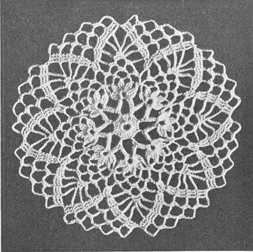
EDGE: Attach thread in 3rd loop on right hand side before joining of corner motif, ch 1 and work 3 s c in same space, ch 7, 3 s c in next loop, ch 7, 3 s c in next loop, ch 3, thread over needle, insert in same loop with joining, pull through and work off 2 loops, thread over needle, insert in same loop with joining of next motif, pull through and work off all loops 2 at a time, ch 3, 3 s c in next loop, * ch 7, 3 s c in next loop, repeat from * 18 times, ** thread over needle, insert in next loop (same as joining) pull through and work off 2 loops, thread over needle, insert in same loop with joining of next motif, pull through and work off all loops 2 at a time, ch 3, 3 s c in next loop, * ch 7, 3 s c in next loop, repeat from * 10 times, repeat from ** all around working all corner motifs same as 1st corner motif.
Continuation from page 20
2nd Row—Sl st into loop, ch 4, cluster st in same space, * ch 5, sl st in 4th st from hook for picot, ch 1, cluster st in same space, repeat from * twice, ch 5, 2 s c in next loop, ch 4, sl st in top of last 5 c for picot, 2 s c in next ch 7 loop of next motif, ** ch 5, 4 cluster sts with ch 1, picot, ch 1 between each cluster st in next loop, * ch 7, 2 s c in next loop, ch 4, sl st in top of last 5 c for picot, s c in same space, repeat from * twice, repeat from ** 3 times, ch 5, 4 cluster sts with ch 1, picot, ch 1 between each cluster st in next loop, ch 5, 2 s c in next loop, ch 4, sl st in top of last s c for picot, 2 s c in next ch 7 loop of next motif and continue all around in same manner.
If napkins are desired, cut linen the size required. Work a row of s c over a rolled hem.
2nd Row—Ch 7, skip 5 s c, 1 s c in each of the next 3 s c, repeat from beginning all around.
3rd Row—Same as last row of edging on cloth working the 4 cluster sts at corners only.
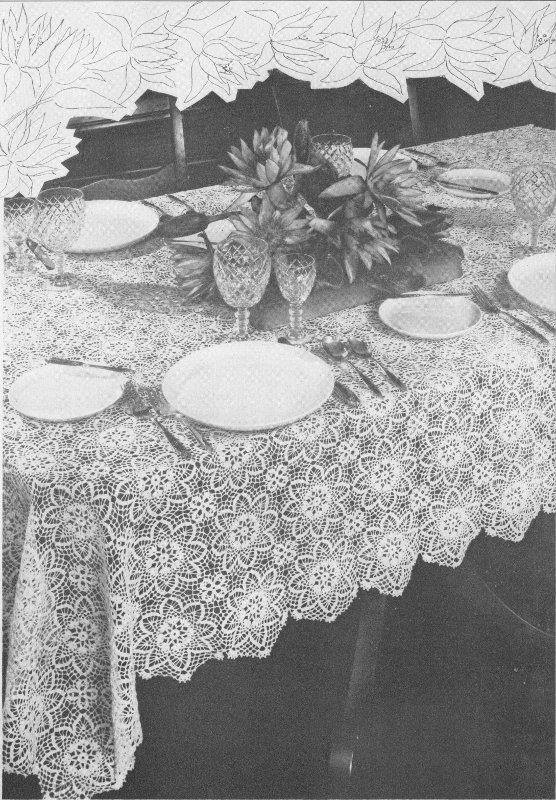
Materials Required—
AMERICAN THREAD COMPANY
“STAR” MERCERIZED CROCHET COTTON.
ARTICLE 20, SIZE 20
Each motif measures about 6 inches. 176 motifs 11x16 are required for cloth measuring 66x96 inches.
LARGE MOTIF—Ch 8, join to form a ring, ch 4, * thread over twice, insert in ring, pull through and work off 2 loops twice, repeat from *, thread over and work off all loops at one time, ** ch 4, * thread over twice, insert in ring, pull through and work off 2 loops twice, repeat from * twice, thread over and work off all loops at one time (a cluster st), repeat from ** 6 times, ch 4, join in 1st cluster st.
2nd Row—Ch 4, tr c in same space, ch 7, 2 tr c in same space, * ch 3, 2 tr c, ch 7, 2 tr c in next cluster st, repeat from * all around, ch 3, join in 4th st of ch.
3rd Row—Sl st to center of loop, ** ch 5, 2 tr c in 1st st of ch, * ch 4, 2 tr c in top of last tr c, (rice st) repeat from * 7 times, s c in top of 4th rice st, ch 4, 2 tr c in same space, ch 4, 2 tr c in top of last tr c, s c in top of 2nd rice st, ch 4, 2 tr c in same space, ch 4, 2 tr c in top of last tr c, skip one loop, s c in next loop, repeat from ** all around, break thread.
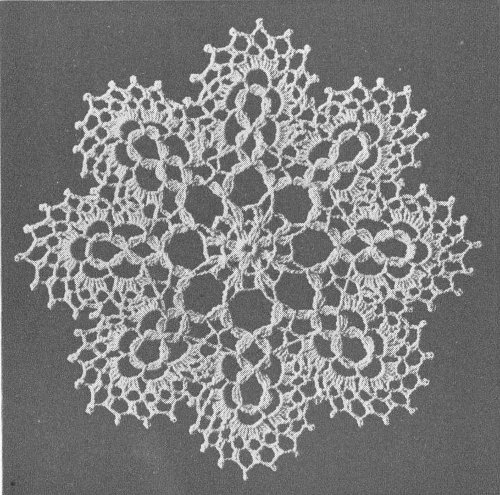
4th Row—Join thread between 5th and 6th rice sts, ch 12, d c between next 2 rice sts, * ch 9, d c between next 2 rice sts, repeat from *, ** ch 9, s c between 10th and 11th rice sts, ch 7, tr c between 12th and 13th rice sts, tr c between 1st and 2nd rice sts of next group, ch 7, s c between 3rd and 4th rice sts, ch 9, d c between 5th and 6th rice sts, * ch 9, d c between next 2 rice sts, repeat from * twice, repeat from ** 6 times, ch 9, s c between 10th and 11 rice sts, ch 7, tr c between 12th and 13th rice sts, tr c between 1st and 2nd rice sts of 1st group, ch 7, s c between 3rd and 4th rice sts, ch 9, join in 3rd st of ch.
5th Row—Sl st to loop, ch 3, 2 d c in same space, ch 3, 3 d c, ch 3, 3 d c in same space, ** ch 3, 3 d c, ch 3, 3 d c, ch 3, 3 d c, ch 3, 3 d c in next loop, * ch 3, 3 d c, ch 3, 3 d c, ch 3, 3 d c in next loop, repeat from *, s c in next loop, ch 3, s c in next 7 ch loop, 3 d c, ch 3, 3 d c, ch 3, 3 d c in next loop, ch 3, 3 d c, ch 3, 3 d c, ch 3, 3 d c in next loop, repeat from ** 6 times, ch 3, 3 d c, ch 3, 3 d c, ch 3, 3 d c, ch 3, 3 d c in next loop, * ch 3, 3 d c, ch 3, 3 d c, ch 3, 3 d c in next loop, repeat from *, s c in next loop, ch 3, s c in next 7 ch loop, 3 d c, ch 3, 3 d c, ch 3, 3 d c in next loop, ch 3, join in 3rd st of ch.
6th Row—Sl st to center of next loop, * ch 5, s c in next loop, repeat from * 10 times, ** skip next 3 ch loop, s c in next 3 ch loop, ch 2, sl st in last 5 ch loop of previous scallop, ch 2, s c in next 3 ch loop of 2nd scallop, ch 2, sl st in next 5 ch loop of previous scallop, ch 2, s c in next 3 ch loop of 2nd scallop, * ch 5, s c in next loop, repeat from * 11 times, repeat from ** 6 times, skip next 3 ch loop, s c in next 3 ch loop, ch 2, sl st in last 5 ch loop of previous scallop, ch 2, s c in next 3 ch loop of 1st scallop, ch 2, sl st in next 5 ch loop of previous scallop, ch 2, s c in next 3 ch loop of 1st scallop, ch 3, d c in sl st of 1st loop, (this brings thread in position for next row).
7th Row—Ch 3, s c in next loop, * ch 7, sl st in 5th st from hook for picot, ch 2, 2 d c in next loop, repeat from * 5 times, ch 7, sl st in 5th st from hook for picot, ch 2, s c in next loop, ch 3, s c in next loop, ch 6, sl st in 5th st from hook for picot, ch 1, s c in next loop of next scallop, repeat from beginning all around, break thread.
Work a 2nd motif in same manner joining to 1st motif in last row as follows: ch 3, s c in next loop, * ch 7, sl st in 5th st from hook for picot, ch 2, 2 d c in next loop, repeat from * twice, * ch 5, sl st in corresponding picot of 1st motif, ch 2, complete picot, ch 2, 2 d c in next loop of 2nd motif, repeat from twice, ch 7, sl st in 5th st from hook for picot, ch 2, s c in next loop, ch 3, s c in next loop, ch 6, sl st in 5th st from hook for picot, ch 1, s c in next loop, ch 3, s c in next loop, ch 7, sl st in 5th st from hook for picot, ch 2, 2 d c in next loop, * ch 5, sl st in corresponding picot of 1st motif, ch 2, complete picot, ch 2, 2 d c in next loop of 2nd motif, repeat from * twice and complete motif same as 1st motif, break thread. Join 3rd motif to 2nd motif and 4th motif to 3rd and 1st motifs in same manner.
JOINING MOTIF—Work 1st 2 rows same as large motif.
3rd Row—Work 2 rice sts, ch 2, sl st in center free picot of 1st scallop, ch 2, complete picot, work 2 rice sts, skip next loop of joining motif, s c in next loop, work 2 rice sts, ch 2, sl st in center free picot of next scallop of same motif, ch 2, complete picot, work 2 rice sts, skip next loop of joining motif, s c in next loop, work 2 rice sts, ch 2, sl st in center free picot of next scallop of next motif, ch 2, complete picot and continue in same manner until joining is completed, break thread.
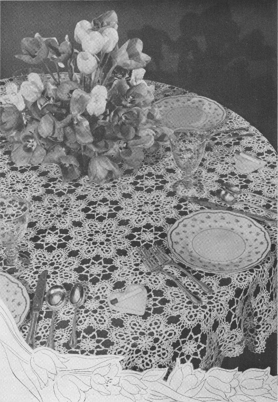
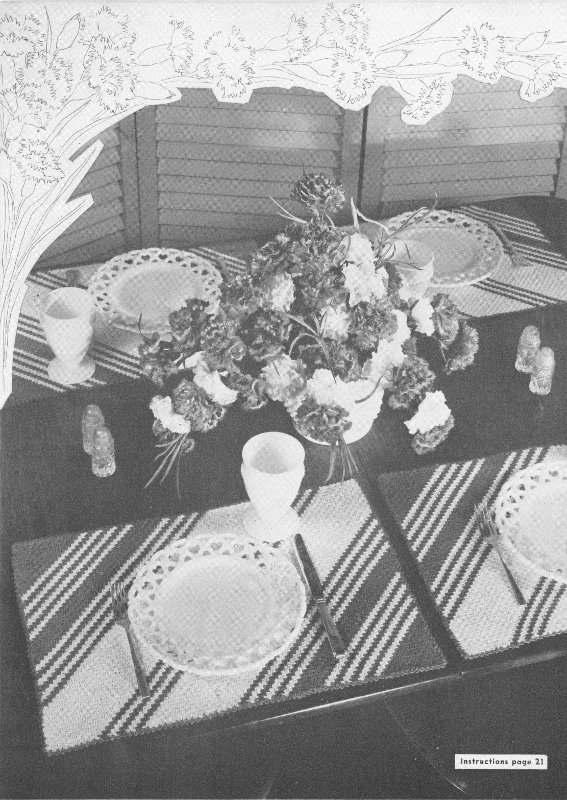
Instructions page 21
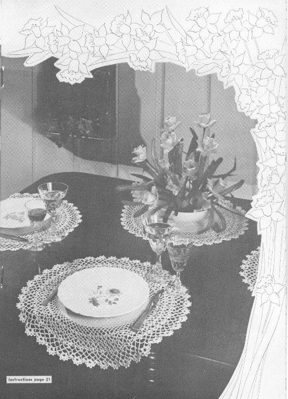
Instructions page 21
Materials Required—
AMERICAN THREAD COMPANY
“STAR” MERCERIZED CROCHET COTTON.
ARTICLE 20. SIZE 30
Ch 200, d c in 8th st from hook, 1 d c in each of the next 3 sts of ch, * ch 2, skip 2 sts of ch, d c in next st, repeat from * 14 times, 1 d c in each of the next 3 sts of ch, * ch 2, skip 2 sts of ch, d c in next st, repeat from * 24 times, 1 d c in each of the next 3 sts of ch, * ch 2, skip 2 sts of ch, d c in next st, repeat from * 18 times, 1 d c in each of the next 3 sts of ch, ch 2, skip 2 sts of ch, d c in last st, ch 5 to turn each row.
2nd Row—D c in next d c, 1 d c in each of the next 3 d c, * ch 2, d c in next d c, repeat from * 18 times, 1 d c in each of the next 3 d c (a solid mesh), * 2 d c in mesh, 1 d c in next d c, repeat from * once, * ch 2, d c in next d c (an open mesh), repeat from * 22 times, 1 d c in each of the next 3 d c, * ch 2, d c in next d c, repeat from * 14 times, 1 d c in each of the next 3 d c, ch 2, d c in 3rd st of ch.
3rd Row—1 open mesh, 1 solid mesh, 15 open meshes, 1 solid mesh, 22 open meshes, 2 solid meshes, 21 open meshes, 1 solid mesh, 1 open mesh. Continue working back and forth according to diagram to arrow, then repeat from beginning to arrow 6 times.
Work 2 more lengths of insertion in same manner and finish all edges with a row of s c, working 2 s c in 1 mesh and 3 s c in next mesh and 5 s c in each corner mesh.
Cut 2 strips of linen 4 inches wide and required length. Cut 2 strips of linen 14 inches wide and required length. Work a row of s c over a narrow rolled hem around linen sections. Sew linen and insertion together as illustrated.
EDGE: Join thread in corner, * 1 s c in each of the next 12 s c, ch 5, turn, s c in 6th s c from hook, ch 5, s c in 1st s c made, ch 1, turn and work 9 s c over first ch 5 loop and 5 s c over 2nd loop, ch 5, turn, s c in center st of 1st scallop, ch 1, turn and work 5 s c over loop, ch 3, slip st in top of s c for picot, 4 s c over same loop, sl st in top of 2nd scallop and finish same scallop with 4 more s c, slip st into s c of previous row, repeat from * all around, break thread. If napkins to match are desired, cut squares of linen the size required and work a row of s c over a narrow rolled hem.
EDGE: Starting at corner, * 1 s c in each of the next 6 s c, ch 5, turn, s c in 1st s c, ch 1, turn, work 3 s c over loop, ch 3, slip st in top of s c for picot, 3 s c over same loop, repeat from * all around, break thread.
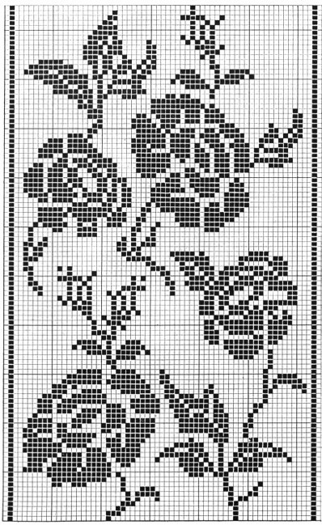
When worked on a chain, work the first d c in 8th ch from hook * ch 2, skip 2 sts, 1 d c in next st, repeat from *. Succeeding rows, ch 5 to turn and d c in d c, * ch 2, d c in next d c, repeat from *.
Four double crochets form 1 solid mesh and 3 d c are required for each additional solid mesh.
To increase a solid mesh at end of row, work a tr c in same space with last d c, work 2 more tr c working each tr c into lower loop of previous st.
To increase 1 open mesh at end of row, ch 2, tr c in same space with last d c.
To increase 1 open mesh at beginning of row, ch 8, d c in 1st d c.
To increase a solid mesh at beginning of row, ch 5, 1 d c in 4th st from hook, 1 d c in next st of ch, d c in next d c.
To decrease a mesh at beginning of row, sl st across 1st mesh.
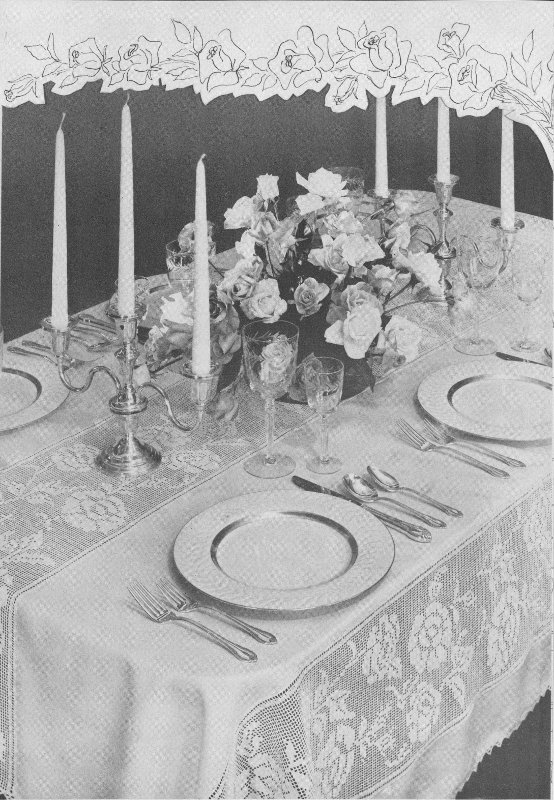
Materials Required—
AMERICAN THREAD COMPANY
“DE LUXE” MERCERIZED CROCHET AND
KNITTING COTTON, ARTICLE 346
Ch 95, tr c in 15th st from hook, ch 1, skip 1 st of ch, tr c in next st, ch 1, skip 1 st of ch, tr c in next st, * ch 5, skip 5 sts of ch, tr c in next st, ch 1, skip 1 st of ch, tr c in next st, ch 1, skip 1 st of ch, tr c in next st, repeat from * 6 times, ch 5, tr c in last st of ch.
2nd Row—Ch 8, turn, d c in 1st tr c, * d c in next ch 1 mesh, d c in next tr c, repeat from * once, * ch 5, d c in next tr c, d c in next ch 1 mesh, d c in next tr c, d c in next ch 1 mesh, d c in next tr c, repeat from * 6 times, ch 5, skip 5 sts of ch, d c in next st.
3rd and 4th Rows—Ch 8, turn, 1 d c in each of the next 5 d c, * ch 5, 1 d c in each of the next 5 d c, repeat from * 6 times, ch 5, skip 5 sts of ch, d c in next st.
5th Row—Ch 9, turn, * tr c in next d c, ch 1, skip 1 d c, tr c in next d c, ch 1, skip 1 d c, tr c in next d c, ch 5, repeat from * across row, skip 5 sts of ch, tr c in next st. Repeat the 2nd, 3rd, 4th and 5th rows 4 times, without breaking thread start border, ch 13 and working across short side skip 1 row, d c over end st of next row, * ch 10, skip 3 rows, d c over end st of next row, repeat from * 3 times, ch 10, d c in center st at corner, ch 10, d c in same corner loop, ch 10, skip 1 tr c, d c in next tr c, * ch 10, d c in center tr c of next tr c group, repeat from * 6 times, ch 10, d c in corner loop, ch 10, d c in corner st of same loop, ch 10, skip 1 row, d c over end st of next row, * ch 10, skip 3 rows, d c over end st of next row, repeat from * 3 times, ch 10, d c in center st at corner, ch 10, d c in same corner loop, ch 10, skip 1 tr c, d c in next tr c, * ch 10, d c in center tr c of next group, repeat from * 6 times, ch 10, d c in corner loop, ch 5, d tr c (3 times over needle) in 3rd st of 1st ch 13, this brings thread in position for next row.
There should be 8 loops on each narrow side including corners and 11 loops on each long side including corners (34 loops).
Next Row—Ch 13, d c in next loop, * ch 10, d c in next loop, repeat from * all around ending row same as last row.
Next Row—Same as last row but ending row with ch 10, sl st in 3rd st of ch, break thread.
New mats should be washed in mild soap flakes, rinsed and dried.
STARCH: Dissolve ¼ cup of starch in ½ cup of cold water. Cook slowly over a low flame. As it thickens, stir in gradually about 1¼ cups cold water. Cook, stirring constantly until the starch clears, 10 to 12 minutes. This makes a thick pasty mixture. As soon as starch is cool enough to handle, dip mat and squeeze starch through it thoroughly. Wring out extra starch. The mat should be wet with the starch, but there should be none in the spaces. Pin mat in position according to size and leave until thoroughly dry.
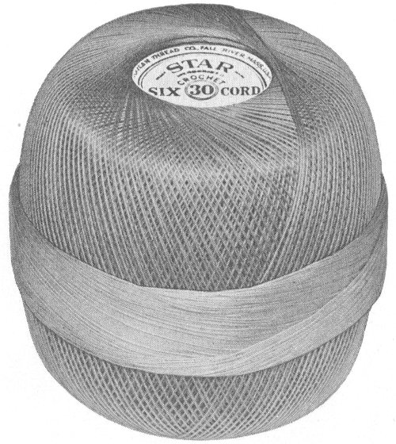
“STAR” Mercerized Crochet Cotton, Article 20 comes in sizes 10, 20 and 30, and in shades from White to Dark Linen. Your local dealer will help you select your shade and show you the other American Thread Company “STAR” Brand Crochet Cottons.
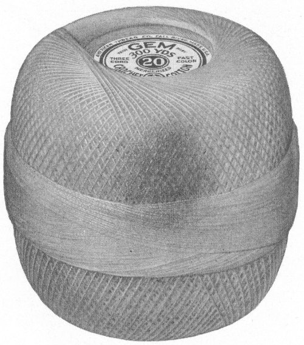
Gem Mercerized Crochet Cotton, Article 35, comes in many lovely shades to fit in with your personal scheme of interior decoration. It is also available in white, of course. It would be particularly charming for any one of the tablecloths shown in this book.
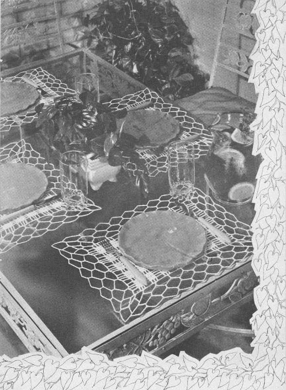
Materials Required—
AMERICAN THREAD COMPANY
“STAR” MERCERIZED CROCHET COTTON.
ARTICLE 20. SIZE 30
Each motif measures about 3 inches. 567 motifs, 21x27 are required for a cloth measuring about 63x81 inches.
MOTIF—Ch 12, join to form a ring, ch 3, * thread over, insert in ring, pull through and work off 2 loops, repeat from *, then work off remaining loops at one time, ** ch 4, * thread over needle, insert in ring, pull through and work off 2 loops, repeat from * twice, thread over and work off remaining loops at one time (this is a cluster stitch), repeat from ** until there are 8 cluster sts in ring, ch 4, join.
2nd Row—Ch 6, sl st in 4th st from hook for picot, ch 7, sl st in 4th st from hook for picot, ch 2, s c in next cluster st, repeat from beginning all around, join.
3rd Row—Sl st to center of picot loop, * ch 9, s c in center of next picot loop, repeat from * all around, join.
4th Row—Sl st into loop, ch 3 and work 3 cluster sts with ch 3 between each cluster st in same loop, * ch 6, 3 cluster sts with ch 3 between each cluster st in next loop, repeat from * all around, ch 6, join in 1st cluster st.
5th Row—Sl st in ch 3 loop, ch 3, work 2 cluster sts with ch 3 between in same loop, ch 3, 2 cluster sts with ch 3 between in next loop, * ch 6, skip 1 loop, 2 cluster sts with ch 3 between in next loop, ch 3, 2 cluster sts with ch 3 between in next loop, repeat from all around, ch 6, join.
6th Row—Sl st into loop, ch 3 and work 2 cluster sts with ch 3 between in same loop, * ch 3, 2 cluster sts with ch 3 between in next loop, repeat from * once, ** ch 1 s c over the ch 6 loops of 2 previous rows, ch 4, 2 cluster sts with ch 3 between in next ch 3 loop, * ch 3, 2 cluster sts with ch 3 between in next loop, repeat from * once, then repeat from ** all around, join in 1st cluster st.
7th Row—Ch 1, * 2 s c, 4 ch picot, 1 s c in each 3 ch loop, ch 6, sl st in 4th st from hook for picot, ch 2, skip the 2-ch 4 loops, repeat from * all around, join, break thread.
Work another motif in same manner joining it to 1st motif in last row as follows: work 2 s c in 1st ch 3 loop, ch 2, sl st in corresponding picot of 1st motif, ch 2, complete picot, 1 s c in same loop of 2nd motif, join the next 4 picots of 2nd motif in same manner and complete motif same as 1st motif. Join 3rd motif to 2nd motif and join 4th motif to 3rd and 1st motifs in same manner leaving 2 picots free between joinings.
JOINING MOTIF—Work 1st row of large motif, * ch 5, join to 3rd free picot of large motif, ch 2, sl st in 3rd st of ch to complete picot, ch 5, skip 1 picot, sl st in next picot of same large motif, ch 2, sl st in 3rd st of ch to complete picot, ch 2, s c in next cluster st of small motif, ch 6, sl st in 4th st from hook for picot, ch 2, s c in next cluster st of small motif, repeat from * all around joining all motifs in same manner, break thread.
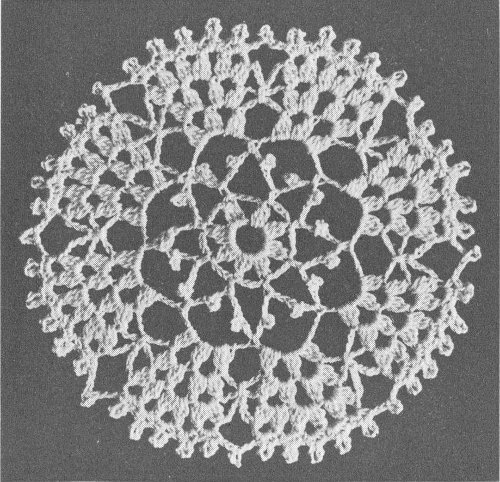
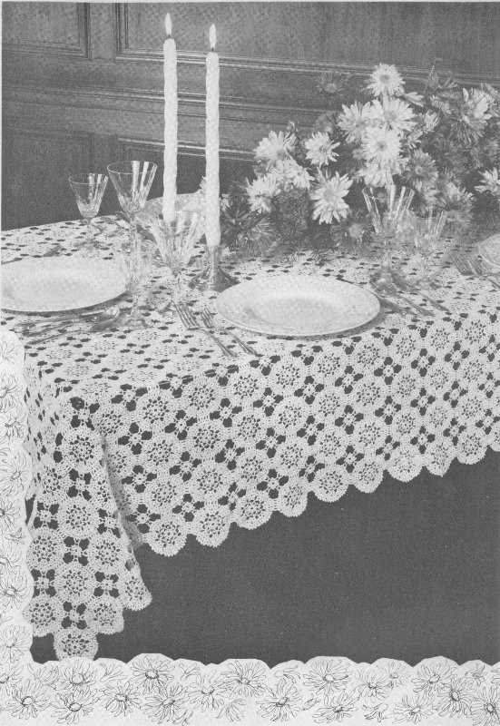
Illustrated on page 3
Materials Required—
AMERICAN THREAD COMPANY
“STAR” MERCERIZED CROCHET COTTON.
ARTICLE 20, SIZE 20
Each motif measures about 2½ inches. 660 motifs 22x30 are required for cloth measuring about 55x75 inches.
Ch 8, join to form a ring, ch 1 and work 16 s c in ring, join in 1st s c.
2nd Row—* Ch 16, s c in next s c, repeat from * 14 times, ch 7, tr tr c (4 times over needle) in joining, this brings thread in position for next row.
3rd Row—* Ch 6, s c in next loop, repeat from * 14 times, ch 3, d c in tr tr c.
4th Row—Ch 6, 3 d c in same loop, * 3 d c, ch 3, 3 d c in next loop, repeat from * 14 times, 2 d c in 1st loop, join in 3rd st of ch.
5th Row—Sl st to loop, ch 5, d tr c (3 times over needle) in same space, ch 5, 2 d tr c in same space, ch 11, 2 d tr c in same space, ch 5, 2 d tr c in same space, * ch 5, s c in next loop, ch 5, 2 d c, ch 5, 2 d c in next loop, ch 5, s c in next loop, ch 5, 2 d tr c, ch 5, 2 d tr c, ch 11, 2 d tr c, ch 5, 2 d tr c in next loop, repeat from * twice, ch 5, s c in next loop, ch 5, 2 d c, ch 5, 2 d c in next loop, ch 5, s c in next loop, ch 5, join in 5th st of ch, break thread.
Work a 2nd motif in same manner joining to 1st motif in last row as follows: sl st to loop, ch 5, d tr c in same space, ch 5, 2 d tr c in same space, ch 5, sl st in corresponding loop of 1st motif, ch 5, 2 d tr c in same space of 2nd motif, ch 2, sl st in corresponding loop of 1st motif, ch 2, 2 d tr c in same space of 2nd motif, ch 5, s c in next loop of 2nd motif, ch 5, 2 d c in next loop of 2nd motif, ch 2, sl st in corresponding loop of 1st motif, ch 2, 2 d c in same loop of 2nd motif, ch 5, s c in next loop of 2nd motif, ch 5, 2 d tr c in next loop of 2nd motif, ch 2, sl st in corresponding loop of 1st motif, ch 2, 2 d tr c in same space of 2nd motif, ch 5, sl st in corresponding loop of 1st motif, ch 5, 2 d tr c in same space of 2nd motif, ch 5, 2 d tr c in same space of 2nd motif and complete motif as 1st motif. Join all motifs in same manner.
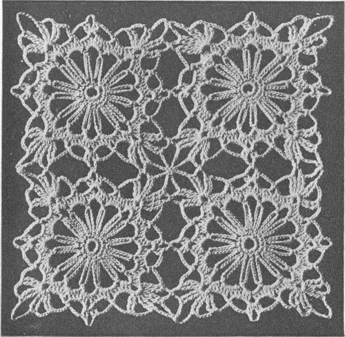
Illustrated on page 12
Materials Required—
AMERICAN THREAD COMPANY
“SILLATEEN SANSIL”. ARTICLE 101
With Red, ch 4, 3 d c in 4th st from hook, ch 3, turn.
2nd Row—2 d c in 1st d c, skip 1 d c, sl st in next d c, ch 3, 2 d c in same space with sl st (shell), ch 3, turn.
3rd Row—2 d c in 1st d c, sl st in the ch 3 of same shell, ch 3, 2 d c in same space, sl st in ch 3 of next shell, ch 3, 2 d c in same space, ch 3, turn. Repeat the 3rd row having one more shell in each row and ending each row with 2 d c in same space until there are 18 shells in row, break Red.
Next Row—Attach White and work in same manner (when changing Color always complete last half of st with next Color). Work 1 more row in White, break White. Attach Red and work 2 rows in same manner, break Red. Continue in same manner working 2 rows White, 2 rows Red, 2 rows White, 2 rows Red, 2 rows White, 8 rows Red, 2 rows White, 2 rows Red, 2 rows White, 2 rows Red, 2 rows White, 2 rows Red, 11 rows White (63 shells in last row), ch 3, turn.
Next Row—2 d c in 1st d c, sl st in ch 3 of same shell, ch 3, 2 d c in same space, * sl st in ch 3 of next shell, ch 3, 2 d c in same space, repeat from * to end of row ending with a sl st in the ch 3 of last shell, ch 1, turn (63 shells in each remaining row).
Next Row—Sl st to ch 3 of 1st shell, ch 3, 2 d c in same space, sl st in ch 3 of next shell, then continue working in shells across row working 2 d c in same space with last sl st, ch 3, turn. Repeat the last 2 rows working 9 more rows White, 2 rows Red, 2 rows White, 2 rows Red, 2 rows White, 2 rows Red, 12 rows White.
Next Row—Sl st to ch 3 of 1st shell, ch 3, 2 d c in same space, sl st in ch 3 of next shell, continue working in shells across row ending row with a sl st in last shell, ch 1, turn. Repeat last row for remainder of mat having 1 shell less in each row working 9 more rows White, 2 rows Red, 2 rows White, 2 rows Red, 2 rows White, 2 rows Red, 2 rows White, 8 rows Red, 2 rows White, * 2 rows Red, 2 rows White, repeat from * twice, break White.
Attach Red and continue in same manner until 2 shells remain. ch 1, turn, sl st to ch 3 of shell, ch 3, thread over, insert in same space, pull through and work off 2 loops, thread over, insert in 1st d c of next shell, pull through and work off 2 loops, thread over, insert in next d c of same shell, pull through, work off 2 loops, thread over and work off all loops at one time, break thread and fasten securely.
EDGE: With Red, * ch 3, 2 d c in same space, skip the length of a d c, s c in next st, repeat from * all around.
Illustrated on page 13
Materials Required—
AMERICAN THREAD COMPANY
“PURITAN” MERCERIZED CROCHET AND
KNITTING COTTON. ARTICLE 40
Each doily measures about 19 inches in diameter.
Ch 6, join to form a ring, ch 1 and work 8 s c in ring, do not join this or the following rows, place a marker at beginning of each row.
2nd Row—2 s c in each s c.
3rd Row—Working in s c, increase in every other st.
4th Row—Increase in every 3rd s c.
5th Row—Increase in every 4th s c.
6th Row—Increase in every 5th s c, then work 1 row even.
8th Row—Increase in every 6th s c.
9th Row—Increase in every 7th s c, then work 1 row even.
11th Row—Increase in every 8th s c.
12th Row—Increase in every 9th s c, then work 1 row even.
14th Row—Increase in every 10th s c.
15th Row—Increase in every 11th s c.
16th Row—Increase in every 12th s c. Repeat the 11th, 12th, 13th and 14th rows.
21st & 22nd Rows—Work even.
23rd Row—Increase in every 11th s c, then work 5 rows even.
29th Row—Increase in every 6th s c, then work 4 rows even.
34th Row—Increase in every 7th s c, then work 1 row even.
36th Row—Increase in every 8th s c, then work 4 rows even.
41st Row—Increase in every 9th s c, then work 3 rows even.
45th Row—Increase in every 10th s c, then work 4 rows even.
50th Row—Increase in every 11th s c, then work 4 rows even (312 s c), sl st in next 2 s c to even row.
55th Row—* Ch 6, skip 3 s c, s c in next s c, repeat from * all around ending row with ch 3, d c in same st with the 1st ch 6, this brings thread in position for next row (78 loops).
56th Row—* Ch 7, s c in next loop, repeat from * all around ending row with ch 3, tr c in d c.
57th Row—Same as last row ending row with ch 3, tr c in tr c.
58th Row—Same as last row but having 8 chs in each loop and ending row with ch 4, tr c in tr c.
59th Row—Ch 4, s c in same loop ** ch 4, 2 cluster sts with ch 5 between in next loop (cluster st: thread over needle, insert in loop, pull through and work off 2 loops, * thread over needle, insert in same space, pull through and work off 2 loops, repeat from *, thread over and work off all loops at one time), ch 4, s c in next loop, ch 4, s c in same loop (picot loop) repeat from ** all around ending row with ch 4, 2 cluster sts with ch 5 between in next loop, ch 4, join in base of 1st picot loop.
60th Row—Sl st into the picot loop, * ch 7, s c in ch 5 loop between next 2 cluster sts, ch 4, s c in same space (picot loop), ch 7, s c in next picot loop, repeat from * all around ending row with ch 4, tr c in sl st.
61st Row—Ch 8, d c in same loop, * ch 5, sl st in 4th st from hook for picot, ch 1, 1 d c, ch 5, 1 d c (shell) in next ch 7 loop, repeat from * all around ending row with ch 5, sl st in 4th st from hook for picot, ch 1, join in 3rd st of ch.
62nd Row—Sl st into shell, * ch 4, s c in same space, ch 8, skip the picot, s c in center of next shell, repeat from * all around ending row with ch 4, s c in same space, ch 4, tr c in sl st.
63rd Row—Same as 61st row working a shell in each 8 ch loop.
64th Row—Sl st into shell and work 2 cluster sts with ch 5 between in same space, * ch 6, s c in next shell, ch 4, s c in same space, ch 6, 2 cluster sts with ch 5 between in next shell, repeat from * all around ending row with ch 6, s c, ch 4, s c in next loop, ch 6, join in top of 1st cluster st.
65th Row—Sl st into loop, * ch 4, s c in same space, ch 9, s c in next picot loop, ch 9, 1 s c, ch 4, 1 s c between next 2 cluster sts, repeat from * all around in same manner ending row with Ch 4, d tr c in sl st.
66th Row—* Ch 10, s c in next ch 9 loop, repeat from * all around ending row with ch 5, tr tr c (4 times over needle) in d tr c.
67th Row—* Ch 10, s c in next loop, repeat from * all around ending row same as last row.
68th Row—Ch 1, s c in same space, * ch 6, 2 cluster sts with ch 6 between in next loop, ch 6, s c in next loop, repeat from * all around, join in 1st s c.
69th Row—Ch 1, s c in same s c, ** ch 6, cluster st between next 2 cluster sts, * ch 5, sl st in 4th st from hook for picot, ch 1, cluster st in same space, repeat from * twice, ch 6, s c in next s c, repeat from ** all around, break thread.
To insure the best results make certain that the “STAR” Brand Crochet Cotton you buy to crochet your tablecloth is of one dye lot. The best way to be sure of this is to purchase sufficient material at one time to complete your piece. Or you can ask your dealer to reserve enough “STAR” Brand Crochet Cotton for you.
Occasionally even the most skilled needlewoman needs a helping hand with her work and the beginner needs guidance over the bumpy path of learning. We extend that helping hand by offering you the assistance of Cecilia Vanek with your needlework problems. No question is too small for us to help you with and we will welcome your letters. Write to Cecilia Vanek, The American Thread Co., 260 West Broadway, New York 13, N. Y.
Using hot water and a mild soap, make thick suds, add cold water until suds are lukewarm.
Let the article stand in the suds a very few minutes, then squeeze in and out until thoroughly clean. Rinse in clear water several times or until sure the soap is removed. Roll in a bath towel. This will absorb some of the moisture.
The work is now ready for blocking. Lay the work on a padded ironing board or a flat surface and pin in position with rust proof pins, stretching it gently to correct size and shape. Press through a damp cloth and leave in position until dry.
| ch | Chain |
| st(s) | Stitch(es) |
| sl-st | Slip st. |
| s c | Single Crochet |
| s d c | Short Double Crochet |
| d c | Double Crochet |
| tr c | Treble Crochet |
| d tr c | Double Treble Crochet |
| tr tr c | Triple Treble Crochet |
* (asterisk) When this symbol appears, continue working until directions refer you back to this symbol.
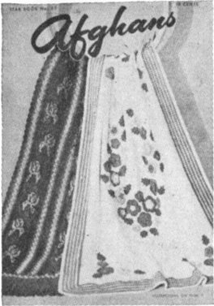
Star Book No. 52
AFGHANS
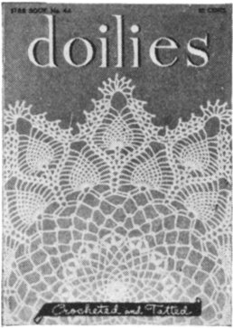
Star Book No. 44
DOILIES
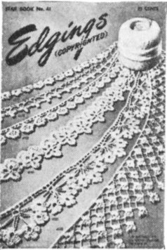
Star Book No. 41
EDGINGS (copyrighted)
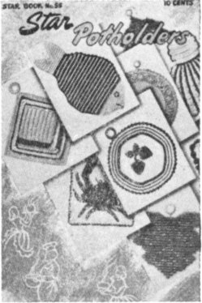
Star Book No. 55
POTHOLDERS
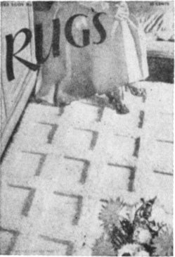
Star Book No. 51
RUGS
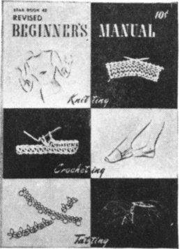
Star Book No. 42
REVISED BEGINNER’S MANUAL
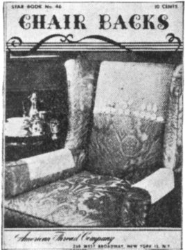
Star Book No. 46
CHAIR BACKS
Star Book No. 53
THE NEW BABY BOOK
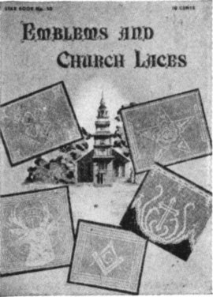
Star Book No. 50
EMBLEMS AND CHURCH LACES
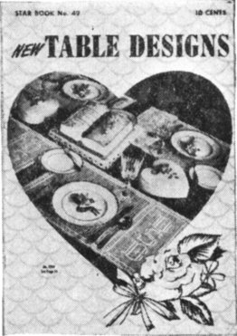
Star Book No. 49
NEW TABLE DESIGNS
These STAR Books are available for 10 cents each at your favorite dealer or write to
THE AMERICAN THREAD COMPANY
260 W. Broadway, New York 13, N. Y.